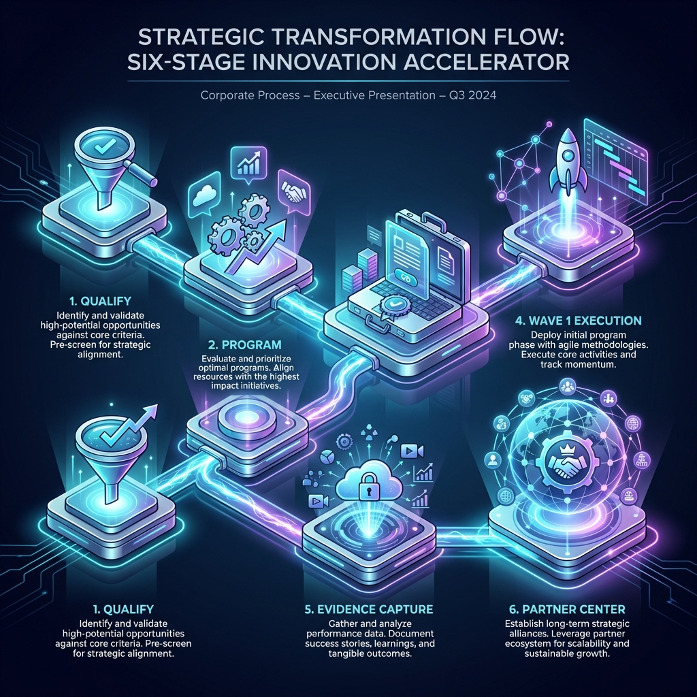
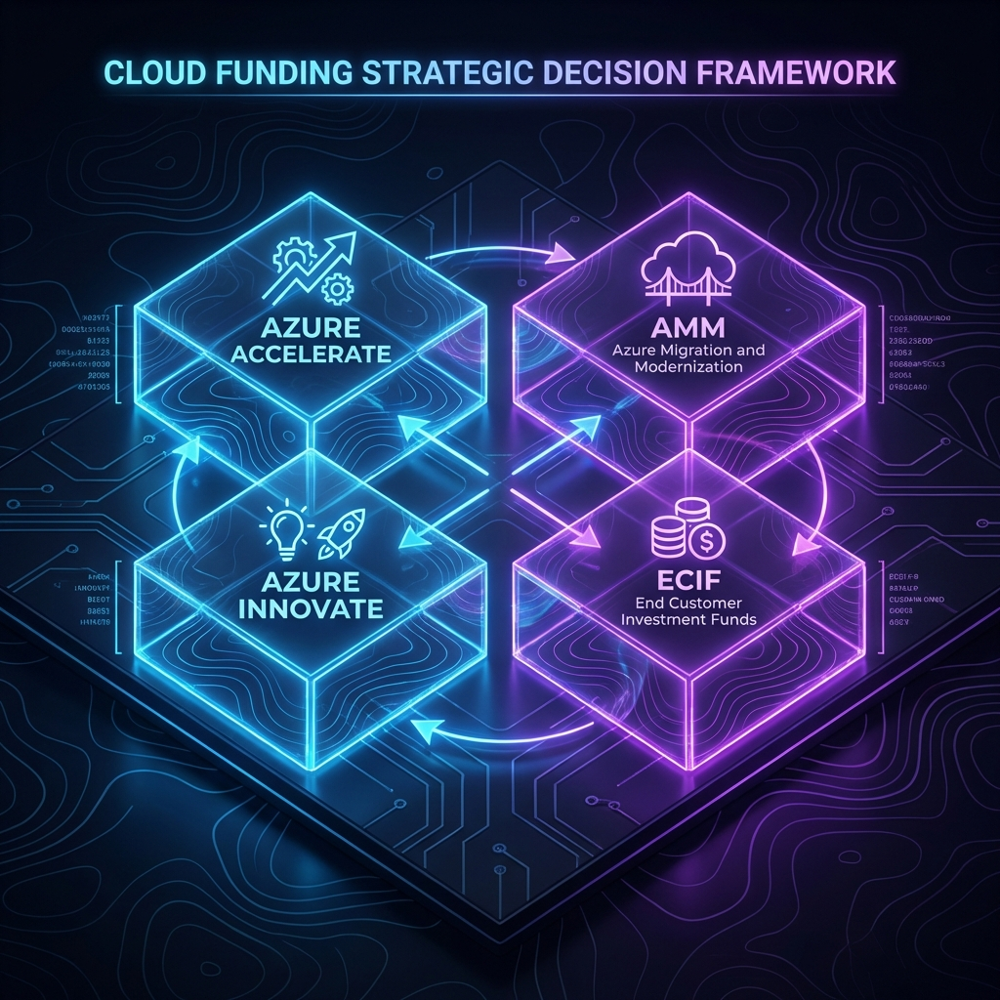

- What is the cost impact and why now?
- What are the risks and how are they controlled?
- What will Wave 1 deliver, and when?
- What evidence proves execution and outcomes?
This guide explains how Microsoft funding programs can support Azure migrations, and how partners should package the work so it is eligible, auditable, and repeatable.
Example scope used throughout: 254 servers, 132 applications
Wave 1 example: 30 application services
1) What Microsoft "funding" actually means (two different systems)
Partners often treat "funding" as one concept. In practice it splits into:
A) Customer acceleration programs (start faster)
These help customers move from planning to implementation with structured engagement paths.
Azure Accelerate is the public umbrella that connects multiple motions and expert guidance.
Reference: Azure Accelerate
B) Partner incentives (operate profitably)
This is the Partner Center incentives ecosystem (rules, enrollment, payouts).
The "Microsoft Commerce Incentive Resources" collection is the central hub for program assets (login
required for many items).
Practical takeaway:
Acceleration helps you get started and reduce friction.
Incentives require correct operations, evidence discipline, and eligibility readiness.
2) The funding map (how successful partners run it)

A consistent partner operating model looks like this:
- Qualify the opportunity (scope, sponsor intent, timeline)
- Select the correct program motion (Accelerate, AMM, Innovate, ECIF)
- Deliver a decision pack (cost assumptions, gates, wave plan, risks)
- Execute Wave 1 (runbooks, validation, controlled change)
- Capture evidence continuously (PoE) (proof aligned to outcomes)
- Operationalize Partner Center (enrollment + payout/tax readiness)
This prevents the most common failure mode: strong delivery, weak evidence, unclear program alignment.
3) Program selection (what to use, when, and why)
Azure Accelerate (start here)
Azure Accelerate is the umbrella used to accelerate cloud and AI journeys with investments and expert
guidance.
Reference: Azure Accelerate
Use Azure Accelerate when:
- the customer needs a structured path from planning to implementation
- leadership wants early confidence before committing to full migration
- you want a clean Wave 1 entry offer that can convert into execution
How to sell it professionally:
- propose a timeboxed decision pack (2–3 weeks)
- define the evidence and approvals required
- present funding as an accelerator, not the only reason to proceed
AMM (Azure Migrate and Modernize)
AMM is the migration acceleration motion used when the customer has decided to move and the focus is Wave 1 delivery.
Use AMM when:
- the customer is committed to migration
- Wave 1 execution needs to start with speed and control
- you want a structured path from plan → migration → verification
What must be present for Wave 1 execution:
- wave sequencing and cutover approach
- dependency capture and validation plan
- landing zone readiness gates
- evidence plan (PoE) built into the runbooks
Commerce incentive program resources hub:
Microsoft Commerce Incentive Resources
Azure Innovate
Innovate aligns best when the customer's priority is modernization, application transformation, data platform work, or AI initiatives.
Use Innovate when:
- the customer wants outcomes beyond infrastructure migration
- an MVP or proof-of-value is needed for approval
- you want an expansion path after Wave 1 (platform + product capability)
Minimum delivery standard (to keep it enterprise-ready):
- security baseline and identity model
- cost guardrails and operating model
- productionization plan (not only a prototype)
ECIF (End Customer Investment Funds)
ECIF is typically used as a co-investment mechanism to support adoption activities that help customers
implement Microsoft solutions successfully.
Reference: ECIF Knowledgebase
Use ECIF when adoption readiness is the real blocker:
- operating model and process gaps
- enablement and internal readiness needs
- governance/compliance requires formal preparation
4) The decision matrix (keep it simple)

| Customer situation | Recommended motion | What you propose | What you deliver |
|---|---|---|---|
| "We need proof and cost first" | Accelerate + assessment | Decision pack in 2–3 weeks | Go/No-Go pack + assumptions |
| "We are ready to migrate now" | Accelerate → AMM | Wave 1 execution sprint | Migrated Wave 1 + evidence |
| "We want modernization / AI outcomes" | Accelerate → Innovate | MVP + operating model | MVP + scale plan |
| "Adoption readiness is blocking" | ECIF | enablement + readiness | trained teams + runbooks |
This matrix avoids vague "funding discussions" and keeps you outcome-driven.
5) The Wave 1 decision pack (what leadership expects)
A decision pack is a short set of artifacts that produces an approval decision without ambiguity.
5.1 Executive summary (one page)
- Wave 1 scope and business objective
- key risks and mitigations
- cost direction and critical assumptions
- decision required: Go / No-Go / Go-with-conditions
5.2 Measured estate facts
- inventory coverage and discovery proof
- readiness issues and constraints
- sizing approach and assumptions
5.3 TCO assumptions sheet (audit-friendly)
This is the credibility anchor.
Include:
- region and pricing basis
- licensing assumptions (where applicable)
- reservation strategy (if any)
- storage and backup requirements
- network egress assumptions
- operational responsibilities and effort model
5.4 Landing zone readiness gates (Pass/Fail)
Wave 1 should not proceed without minimum foundations.
Gates:
- Identity and RBAC model
- Policy baseline
- Network segmentation and DNS readiness
- Outbound control strategy
- Logging and audit trail
- Backup and restore testing
- Runbook readiness
5.5 Dependency capture (inbound and outbound)
Dependencies must be captured as actionable rules and test paths.
Inbound (to the workload):
- source, port/protocol, authentication, required/optional
Outbound (from the workload):
- destination FQDN/IP, port/protocol, DNS dependency, required/optional
5.6 Wave plan and runbook
Wave 1 must include:
- a migration sequence
- change window plan
- rollback approach
- validation checklist
5.7 Evidence plan (PoE)
PoE must be designed at the beginning, not reconstructed later.
6) The Wave 1 readiness gates (Pass/Fail)
| Gate | PASS means | FAIL means |
|---|---|---|
| Identity + RBAC | access is controlled and reviewed | privilege and audit risk |
| Policy baseline | drift prevention exists | fragmentation risk |
| Network + DNS | routing and resolution are predictable | cutover uncertainty |
| Outbound control | egress is governed | compliance risk |
| Logging | audit trail exists | weak incident response |
| Backup + restore | recovery is tested | uncontrolled downtime |
| Runbook | steps are rehearsed | execution risk |
Wave 1 success is repeatability, not volume.
7) A 14-day structure that works in real delivery
A decision pack must be timeboxed so it results in a decision.
Days 1–3: establish facts
- sponsor kickoff
- access and data request list
- Azure Migrate project setup
- discovery initiated
- dependency workshop scheduled
Days 4–7: build evidence
- assessment outputs reviewed
- constraints documented
- TCO assumptions drafted
- dependencies version 1 captured
Days 8–10: finalize plan
- landing zone gate results recorded
- wave sequencing confirmed
- cutover + rollback defined
- PoE evidence plan finalized
Days 11–14: executive decision
- steering committee readout
- Go/No-Go decision
- Wave 1 execution plan approved
- owners and dates confirmed
8) Specialization and audit readiness (the eligibility ladder)
Funding maturity improves when partners meet higher verification standards.
Infra and Database Migration specialization requirements:
Specialization Requirements
Partner dashboard entry point:
Partner Dashboard
9) The PoE evidence pack (what prevents disputes)
PoE should be structured so an external reviewer can verify outcomes quickly.
Evidence pack structure
A) Before state
- discovery export and coverage summary
- baseline performance and sizing inputs
- inbound/outbound dependency matrix
B) Plan state
- landing zone readiness gate results
- wave plan with owners and dates
- risk register and mitigations
C) Execution state
- change records and approvals
- migration logs and status reports
- cutover checklist completion evidence
D) After state
- Azure resource inventory confirmation
- monitoring/logging enabled proof
- backup enabled and restore test evidence
- customer acceptance
This structure makes governance easier and reduces commercial disputes.
10) Partner Center operations (how partners actually get paid)
Successful delivery does not automatically translate into payout readiness.
Partner Center incentives has operational prerequisites.
Partner Center incentives overview:
Partner Incentives Overview
Enrollment:
Incentives Enrollment
Payout and tax profiles:
Manage Payout Profiles
Recommended internal controls:
- one accountable incentives administrator
- a standard PoE folder template for every engagement
- a monthly review cadence for eligibility, enrollment status, and missing evidence
11) A client-ready starter kit (what to standardize)
If you want to win consistently, standardize your deliverables.
Download the Funding First Starter Kit
Includes templates for the Executive Decision Memo, TCO Worksheet, and Readiness Checklist.
Download Kit (.zip)Starter kit contents (Wave 1)
- Executive decision memo (1 page)
- TCO assumptions worksheet
- Landing zone readiness gate checklist
- Dependency capture template (inbound/outbound)
- Wave plan template
- Migration runbook template (cutover + rollback)
- Validation checklist
- PoE evidence index
- Customer sign-off template
12) High-signal references (recommended)
Partner resources
- Microsoft Commerce Incentive Resources:
Commerce Incentive Resources - Azure Accelerate:
Azure Accelerate
Technical foundations
- Cloud Adoption Framework:
Cloud Adoption Framework - Landing zones:
Landing Zones - Azure Migrate appliance for VMware:
Azure Migrate Appliance
Delivery accelerators (GitHub)
- Azure Landing Zones (Bicep):
ALZ-Bicep - Cloud Adoption Framework templates:
CAF Templates - Azure migration tools and scripts:
Migration Tools
Video references
- Azure Migrate technical how-to playlist:
Azure Migrate Playlist - Enterprise-scale landing zones explained:
ESLZ Explained
Closing
Partners build repeatable growth in Azure migrations when they do three things consistently:
- Use Microsoft programs to accelerate outcomes, not to replace the business case
- Deliver Wave 1 using gates, timeboxed planning, and controlled change
- Capture evidence continuously so results are provable and repeatable
That approach turns a single migration into a scalable migration program.
Ready to operationalize your Azure journey?
I help organizations turn stalled cloud initiatives into execution engines.